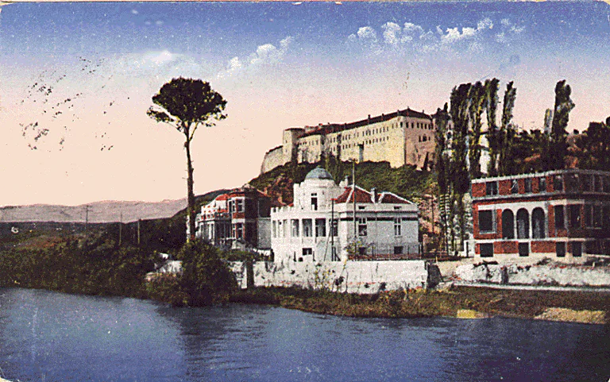
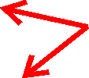
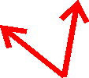

Kale
- Produkcija
- UFUŽ in Dokumentarni film Praga
- Scenarij in režija
- Slavko Janevski in EMAN CANERA
- Leto
- 1959
- Trajanje
- 00:10
Vhod v skopsko trdnjavo - Kale. (začetek 20. stoletja)
Enega najbolj izstopajočih mest v središču Skopja zavzema skopska trdnjava - Kale*. Arheološka izkopavanja so pokazala, da je bil Kale poseljen že v prazgodovini - v neolitiku in zgodnji bronasti dobi. Na Kaleju so živeli zaradi njegove izjemne strateške lege. Raziskave so pokazale, da je bil v temeljih uporabljen material iz Scupija, ki ga je katastrofalni potres leta 518 skoraj povsem uničil. Po tem potresu se je mesto preselilo na današnjo lokacijo. Zgrajena je bila utrdba, ki so jo skozi stoletja širili in krepili. Danes je ostal le majhen del, ki je obnovljen, v njegovem osrčju pa je urejeno sprehajališče.
* (Kale v turščini pomeni trdnjava, ljudje pa so besedo prevzeli kot kratko ime za skopsko trdnjavo)

Skopska trdnjava - Kale z delom njenega obzidja.
- začetek 20. stoletja

Skopska trdnjava - Kale - 1910-a leta.

Skopska trdnjava - Kale - posneta s strani današnjega parka, konec 19. stoletja.

Skopska trdnjava - Kale - 1910-a leta.

Skopska trdnjava - Kale - 1910-a leta.

Skopska trdnjava - Kale. Posneta z mesta današnjega parka, 1910-a leta.

Skopska trdnjava - Kale. Posneta z mesta današnjega parka, 1910-a leta.

Pogled na skopsko trdnjavo - Kale. 1920-a leta.

Pogled na skopsko trdnjavo - Kale s severne strani.
- 1910-a leta.

Čudovita fotografija mesta in toka Vardarja. Levo je skopska trdnjava - Kale. V sredini se vidita Oficirski dom in Narodna banka. Desno je gora Vodno, v daljavi pa robovi gore Kitka
- konec 1920-ih let.

Skopska trdnjava - Kale in stara kavarna „Boges“, kjer so se zbirali igralci in so potekale prve gledališke predstave - začetek 20. stoletja.

Skopska trdnjava - Kale z vojašnicami - 1911. Pod trdnjavo se vidi stara kavarna „Boges“.

Skopska trdnjava - Kale in stara kavarna „Boges“
- konec 1910-ih let.

Fotografija je posneta s Kamnitega mostu okoli leta 1910. Levo se vidi staro turško gledališče, nad njim pa skopska trdnjava - Kale.

Fotografija je posneta s Kamnitega mostu okoli leta 1910. Levo se vidi staro turško gledališče, nad njim pa skopska trdnjava - Kale.

Skopska trdnjava - Kale in stara judovska četrt pod njo - konec 1910-ih let.

Skopska trdnjava - Kale z delom hiš v judovski četrti, ki so v gradnji - 1920-a leta.

Skopska trdnjava - Kale, pod njo pa del hiš judovske četrti - 1920-a leta.

Skopska trdnjava - Kale in novozgrajene stavbe v judovski četrti - 1920-a leta.

Skopska trdnjava - Kale z delom hiš judovske četrti - 1920-a leta.

Skopska trdnjava - Kale in novozgrajene stavbe v judovski četrti - 1920-a leta.

Skopska trdnjava - Kale. Pod njo je del hiš judovske četrti - 1920-a leta.

Skopska trdnjava - Kale in novozgrajene stavbe v judovski četrti - 1920-a leta.

Pogled na skopsko trdnjavo - Kale z ene od ulic judovske četrti - 1920-a leta.

Fotografija z Oficirskega doma - okoli 1930. Čudovit posnetek Narodnega gledališča, lesenega mostička in skopske trdnjave - Kale.

V ospredju je Narodno gledališče, nad njim pa se dviga skopska trdnjava - Kale - 1930-a leta.

Fotografija skopske trdnjave - Kale, na kateri se dobro vidijo sestavni deli utrdbe. Pod trdnjavo se vidi Narodno gledališče v vsej svoji lepoti.
- 1930-a leta.

Fotografija skopske trdnjave - Kale, na kateri se dobro vidijo sestavni deli utrdbe. Pod trdnjavo se vidi Narodno gledališče - 1930-a leta.

V ospredju je Narodno gledališče, nad njim pa se dviga skopska trdnjava - Kale - 1950-a leta.







 Akvadukt4 razgledniceKale30 razglednic
Akvadukt4 razgledniceKale30 razglednic Mostovi60 razglednic
Mostovi60 razglednic Nabrežje58 razglednic
Nabrežje58 razglednic Trg46 razglednic
Trg46 razglednic Stavbe66 razglednic
Stavbe66 razglednic Krščanski templji19 razglednic
Krščanski templji19 razglednic Muslimanske stavbe33 razglednic
Muslimanske stavbe33 razglednic Oficirski dom29 razglednic
Oficirski dom29 razglednic Gledališče28 razglednic
Gledališče28 razglednic Železniška postaja13 razglednic
Železniška postaja13 razglednic Šole36 razglednic
Šole36 razglednic Parki12 razglednic
Parki12 razglednic Tržnice18 razglednic
Tržnice18 razglednic Ulice38 razglednic
Ulice38 razglednic Panorama I60 razglednic
Panorama I60 razglednic Panorama II30 razglednic
Panorama II30 razglednic Kolaži55 razglednic
Kolaži55 razglednic Poplave9 razglednic
Poplave9 razglednic Potres27 razglednic
Potres27 razglednic Skopje 200026 razglednic
Skopje 200026 razglednic